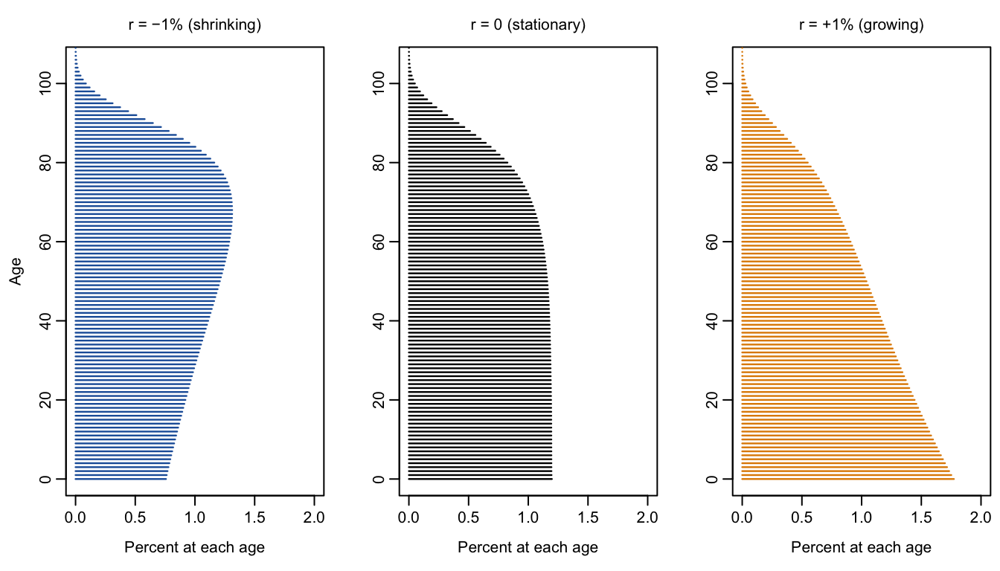

9Are Too Few Children a Problem? Age Structure and Optimal Fertility
Draft: provenance notes (for review)
Margin tags mark material that is not in the course slides or lab. Added · from readings comes from the assigned readings (Lee et al. 2014). Added · new is from outside the course materials (my framing, general knowledge, or my own analysis) and needs the closest check. Untagged material follows the 2025 slides (13–14) and the aging lab.
In this chapter. How to read a population pyramid as history; why a population with fixed birth and death rates ends up with a stable age structure; and Ronald Lee and coauthors’ surprising answer to the question “What fertility rate is best for the standard of living?”
Readings this chapter draws on. Lee et al. (2014), “Is low fertility really a problem? Population aging, dependency, and consumption,” Science.
Added · new Bridge text written for the chapter split.
Chapter 8 showed that a pay-as-you-go pension system works better when each generation is larger than the one before, so low fertility makes pensions harder to pay for. Should we therefore want more children? To answer, this chapter first looks at how birth and death rates shape a population’s age structure, and then weighs the costs of children, of the elderly, and of capital together.
9.1 The population pyramid as history
9.1.1 Reading a pyramid
The size of each age group today depends on how many babies were born in each past year and how many of them survived. A population pyramid is therefore a record of history. A pyramid of France on January 1, 1999 shows the marks of the twentieth century: the deficit of births during the 1914–1918 war, the echo when those small “hollow classes” reached childbearing age, the deficit of births during the 1939–1945 war, the baby boom, and fertility’s fall below two children per woman. (How can you tell the men from the women, besides reading French?)
How to “read” an age pyramid:
First, look at the shape to get the growth rate.
Then look for variations in rates. These can come from wars, famines, or changes in fertility, such as China’s one-child policy, the U.S. baby boom, or the fertility transition.
Lastly, look for immigration. The telltale signs are one-sided dents and bulges, where one sex is much more numerous than the other at certain ages.
9.1.2 Stable populations
What determines the shape? Assume a closed population and focus on one sex. Let \(B(t)\) be the number of births in year \(t\) and \(\ell(x)\) the proportion of a birth cohort surviving to age \(x\). People aged \(x\) today are the surviving babies of \(x\) years ago:
\[
P(x, t) = B(t - x)\, \ell(x).
\]
A stable population is one in which age-specific birth and death rates have been fixed long enough that there are no more echoes or “instability.” A mathematical result is that a stable population grows exponentially in every age group, at a rate \(r\) called the intrinsic growth rate. Then there were \(B(t)e^{-rx}\) births \(x\) years ago, so \(P(x,t) = B(t)\,e^{-rx}\,\ell(x)\). In proportions,
\[
p(x) = b \, e^{-rx} \, \ell(x),
\]
where \(b\) is the birth rate. The age structure is the product of two things: survival, \(\ell(x)\), and the history of growth, \(e^{-rx}\). When the population is growing (\(r > 0\)), each older cohort was born into a smaller population, so the pyramid narrows quickly with age. When \(r < 0\), older cohorts are larger at birth than younger ones, and the pyramid bulges at older ages.
Figure 9.1 shows the stable age structures implied by Japan’s 2009 survival with growth rates of −1, 0, and +1 percent per year.
Show the R code
op <-par(mfrow =c(1, 3), mar =c(4, 3.5, 2.5, 0.5), mgp =c(2.2, 0.6, 0))rs <-c(-0.01, 0, 0.01)cols <-c(col_shrink, col_zero, col_grow)titles <-c("r = −1% (shrinking)", "r = 0 (stationary)", "r = +1% (growing)")for (i in1:3) { n <-100*stable_nx(rs[i])plot(n, x, type ="n", xlim =c(0, 2), ylim =c(0, 105),xlab ="Percent at each age", ylab =if (i ==1) "Age"else"",main = titles[i], font.main =1, cex.main =1)segments(0, x, n, x, col = cols[i], lwd =1.2)}par(op)

Figure 9.1: Stable age structures with Japan’s 2009 survival schedule and three growth rates. Bars show the percentage of the population at each age. Source: Human Mortality Database; computation as in the lab.
There are only three stable cases. A growing population has a classic pyramid. A stationary population has a beehive, nearly straight-sided until old age. A shrinking population has an inverted shape, narrowest at the bottom.
9.1.3 Try it: the stable age pyramid app
Added · new This app comes from earlier years of the course (the 2016 transition lecture, the 2021 and 2023 age-pyramid lectures, and the 2018–2021 population-projection labs); it isn’t in the 2025 course repo. I copied it into course_apps_extra/stable and exported it with Shinylive. It uses Swedish life tables rather than Japan’s. The questions are mine; they use only the fertility slider, to stay clear of the Lab 6 graded questions on survival and optimal fertility.
The app draws the stable age structure, \(p(x) = b\,e^{-rx}\,\ell(x)\), for any total fertility rate and life expectancy. It turns the life expectancy into a Swedish historical life table with about that life expectancy, computes the long-run growth rate \(r\) implied by the TFR, and shows the resulting proportion of the population in each five-year age group. It opens in a new tab, so you can make it full screen and keep this page open alongside it. (The first load can take a few seconds while R starts up in your browser.)
Before you move each slider, write down what you expect to happen. Then check.
Two children is not always replacement. At the starting values (TFR = 2, life expectancy = 60), the app reports a negative growth rate. Before you look, can you say why? Then find, roughly, the TFR that gives zero growth with this life expectancy.
High fertility. Raise the TFR to 6, a pre-transition level. Predict the shape of the pyramid and the share of the population under age 15 before you move the slider.
Very low fertility. Lower the TFR to 1.3, about where Japan and much of Southern Europe have been. Which age group is now the largest? Roughly what share of the population is 65 or older, compared with the TFR = 2 case?
9.2 Optimal fertility
9.2.1 Three sides of the story
Now the big question. What rate of population growth, and so what fertility, is best for the standard of living? Three forces pull in different directions:
Population growth is good because it means more workers per elderly person. This is the PAYGO lesson.
Population growth is bad because it means more children per worker.
Population growth is bad because of capital dilution: every new worker has to be equipped with capital. This is the Solow lesson.
9.2.2 The question, and its limits
Added · from readings This subsection and the next three draw on Lee et al. 2014 (text and Box 1).
Ronald Lee and his coauthors begin by noting a “remarkable reversal.” For decades, people worried about high fertility. Now 48 percent of the world’s people live in countries with below-replacement fertility. In 2013, “governments in 102 countries reported that population aging was a ‘major concern’ and 54 countries had enacted policies intended to raise fertility.”
They are candid that the full question can’t be answered:
In their own words
“Identifying an optimal population policy is likely to be impossible for several reasons. First, children yield direct satisfaction and impose costs on parents that are difficult or impossible to measure. Second, the environmental consequences of continuing population growth are exceedingly complex and difficult to value or weigh against other costs and benefits of low fertility. Third, assessing the welfare consequences of differences in fertility requires comparing the welfare of those not yet born to those who will never be born.” (Lee et al. 2014)
So their goal is “more modest”: to ask how fertility and population aging affect the material standard of living.
9.2.3 Two support ratios
Lee and coauthors use the NTA age profiles to build two measures of how age structure affects the economy:
The fiscal support ratio is “the ratio of tax payers to beneficiaries.” Each age group is weighted by the taxes it pays and the public benefits it receives. It measures the effect of age structure on government budgets.
The support ratio is “the ratio of earners to consumers.” Each age group is weighted by its labor income and its consumption, public and private combined:
where \(n(x)\) is the share of the population at age \(x\), \(y(x)\) is labor income, and \(c(x)\) is consumption at age \(x\). A higher support ratio means more resources per person.
The two ratios give different answers because public and private transfers go to different ages. Since public transfers in rich countries go mostly to the elderly and private transfers mostly to children, “the age structure that favors public finances is much younger than the age structure that favors the combined finances of the public and private sectors.”
There is an elegant way to see which way a change in growth pushes the support ratio. Compare the average age at which people consume in the population with the average age at which people earn. If consumption happens later in life, on average, than earning, then a younger population, one that is growing faster, adds more earners than consumers, and the support ratio rises. If consumption happens earlier, a younger population lowers it. At the growth rate that maximizes the support ratio, the two average ages are equal.
Figure 9.2 computes the support ratio for Japan at each fertility level, using the stable age structures from Figure 9.1 and the NTA profiles from Figure 8.1.
Figure 9.2: The support ratio for Japan’s stable population at each total fertility rate, using Japan’s NTA age profiles and 2009 survival (age-structure effects only; no capital). Computation as in the lab.
Taking only age structure into account, the support ratio for Japan peaks at a TFR of about 2.37, above replacement. But notice how flat the curve is. Over a wide range of fertility, from about 1.5 to 3.5 children per woman, the support ratio is never more than about 6 percent below its maximum. Higher fertility means more children and fewer elderly. Lower fertility means fewer children and more elderly. The two kinds of dependency largely cancel out.
9.2.4 Adding capital
The support ratio leaves out the third force. Faster population growth requires more saving and investment just to equip each new generation of workers with capital, and that saving can’t be consumed. Lee and coauthors call this the “capital cost” of higher fertility. Because it depends on how households, firms, and governments respond, they consider two cases:
a low capital cost case, in which the ratio of capital to output stays constant at about 3, the value observed in many rich countries between 1980 and 2004, and
a high capital cost case based on the neoclassical (Solow) growth model, with saving at the “golden rule” rate that maximizes consumption per person. Here “capital per worker rises when fertility falls as has been true in Japan.”
9.2.5 The results
Table 9.1 shows the fertility rates that maximize each objective, averaged over the countries in each income group.
Table 9.1: Total fertility rates that maximize each objective, by income group. Source: Lee et al. (2014), Table 1 (the lecture slide shows the first four columns).
Income group
Fiscal support ratio
Support ratio
Consumption, low capital cost
Consumption, high capital cost
Actual TFR, 2005–10
Lower income
1.08
1.75
1.21
0.91
4.03
Upper-middle income
2.96
2.01
1.51
1.20
2.09
High income
2.94
2.27
1.78
1.48
1.65
Read the high-income row from left to right. Government budgets alone would be best served by about 2.9 children per woman, well above replacement, because children grow up to be taxpayers who pay for the elderly. Counting private family support for children as well, the best fertility falls to about 2.3, because children are expensive for families. Counting the cost of capital, it falls to 1.8 or even 1.5. The striking result is that below-replacement fertility can be “optimal” for the material standard of living.
Lee and coauthors draw the conclusion carefully:
In their own words
“Fiscal pressures on public programs due to population aging are real and important. … In a number of countries, particularly those with very low fertility, standards of living would be moderately higher if fertility increased. Fertility as low as 1.6 births per woman and possibly even lower should not in itself be a matter of concern. Fertility below replacement and modest population decline favor higher material standards of living.” (Lee et al. 2014)
Added · from readings The −2% and Japan figures are from Lee et al. 2014. The quotation on immigration is one Lee et al. take from a 2009 handbook chapter by Goldstein.
Very low fertility is another matter. With the age profiles of high-income countries, a population shrinking at 2 percent a year (a TFR of about 1.1) would have consumption per person about 4 percent lower than at replacement, and 7.6 percent lower with Japan’s very low mortality. Japan, the world’s oldest population, shows both sides. Its support ratio fell 0.6 percent a year in the 2000s and its fiscal support ratio 0.9 percent, and public debt is very high. Yet because slower labor force growth reduced the cost of equipping new workers, consumption per person “also rose at more than 2% annually.” Could immigration help? Only for a while: as the authors quote, “a steady stream of migrants almost always makes a population younger in the short-term but older in the long-term.”
9.2.6 Conclusions and caveats
So low fertility might be something to aim for, not be scared of. Why?
Both kids and the elderly are expensive. In a stable population, an increase in one is largely cancelled out by a decrease in the other.
Capital deepening, the Solow effect, makes slow population growth attractive.
But there are important caveats:
The age schedules of production and consumption are treated as exogenous and fixed.
There is no endogenous technological growth of the kind Romer or Boserup emphasize, in which more people means more ideas or more innovation.
In the lab
In Lab 6 you reproduce Lee and coauthors’ calculations for Japan: from fertility to growth rates, from growth rates to stable age structures, and from age structures to support ratios, first without and then with capital. Then you ask how the answer changes with a different survival schedule.
9.3 Key ideas
A population pyramid records history. In a stable population, \(p(x) = b\,e^{-rx}\,\ell(x)\).
Lee et al. (2014): fertility well above replacement is best for government budgets, near replacement for the support ratio, and below replacement for consumption once capital costs are counted.
9.4 Check your understanding
Added · new These questions are new and avoid the lab’s graded questions.
Reading a pyramid. In a country’s pyramid, the men’s side bulges well beyond the women’s between ages 25 and 40, but the two sides match at younger and older ages. What is the most likely explanation?
Average ages. In your own words, explain why a population in which people consume, on average, at older ages than they earn would have a higher support ratio if it grew faster.
Two support ratios. Lee and coauthors find that the fiscal support ratio is maximized at a higher fertility rate than the support ratio. Explain why, using the direction of public and private transfers.
9.5 Further reading
Lee, Ronald, Andrew Mason, and members of the NTA Network. 2014. “Is low fertility really a problem? Population aging, dependency, and consumption.” Science 346(6206): 229–234. A harder reading. As you read: What is the difference between the fiscal support ratio and the support ratio? What is the “capital cost” of higher fertility? Which countries have fertility that is too low by every measure?